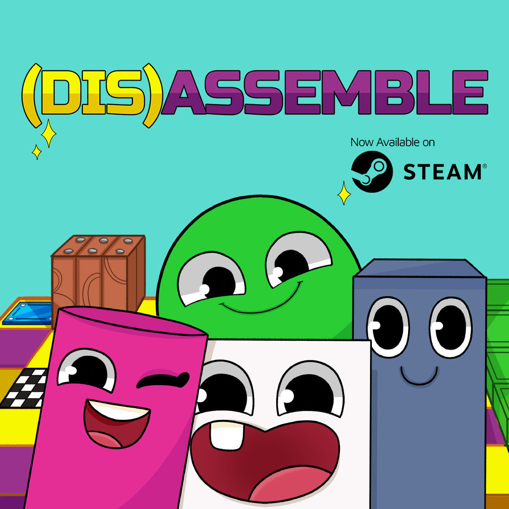
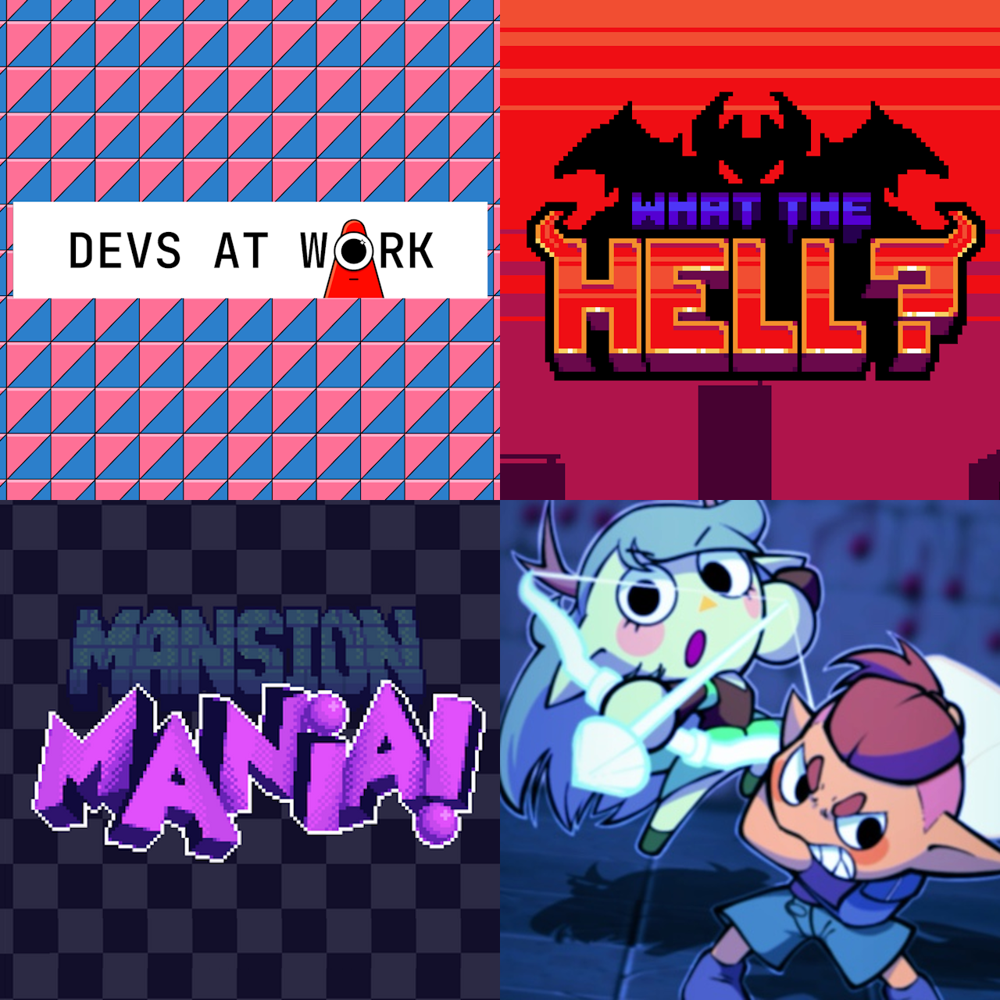
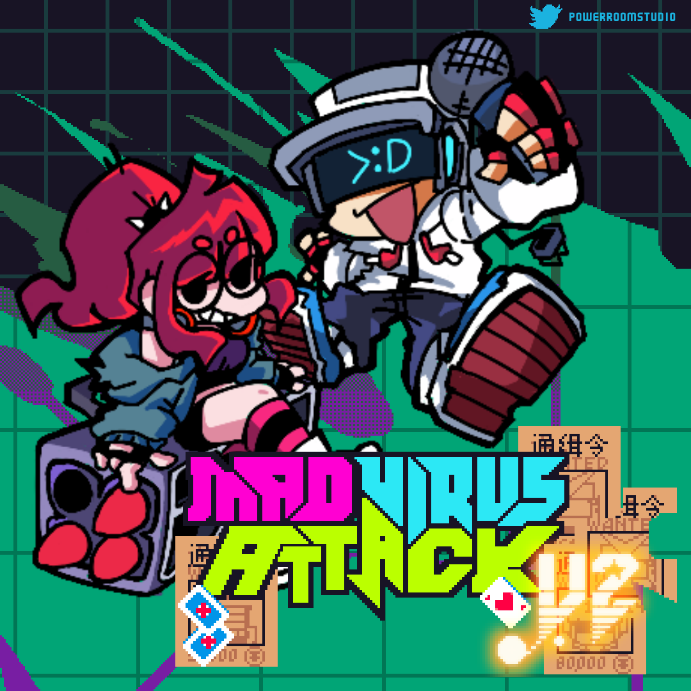
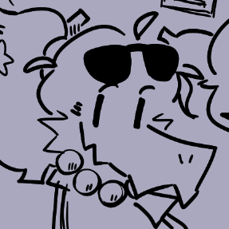

Music
Here you may find some of my musical works, including original compositions, remixes and arrangements, "High-Quality Rips" and game-inspired works.
You may also visit my YouTube channel and SoundCloud profiles, both of which have tracks I have not shared here, such as this one!
(Dis)assemble Original Soundtrack
I have composed the soundtrack for the game (Dis)assemble, a cute and colorful puzzle game about combining sentient pieces to change how they move. Developed by Dragon Fruit Studio, all tracks were composed to dynamically switch between each other, with a playful style inspired by music from Snipperclips.
(Dis)assemble - SteamGamejams
Some tracks I have made for different Gamejam competitions. A bit of varying music styles, including lounge with some chiptune touches, retro action, Halloween jazz and playful battle music.
Devs At Work - Itch.io | WHAT THE HELL? - Newgrounds | Mansion Mania - Itch.io | Story Beats - Itch.ioFriday Night Funkin' - Mano's Beach Hangout OST
 (Art by @pb_lauro!)
(Art by @pb_lauro!)
Some original compositions and remixes for my upcoming Friday Night Funkin mod, titled "Manos Beach Hangout". The overall style is more acoustic and inspired by Brazilian genres, but ultimately it boils down to ideas I thought would be fun.
This kind of "vocals" is common for all my Friday Night Funkin works, though they may sound vastly different between tracks. And in case you are wondering, that voice in all the tracks is my own.
Mad Virus Attack OST
 (Arte por @Rusron1 e @SERIZYU!)To wrap up Friday Night Funkin content, we have some of the soundtrack for the Mad Virus Attack mod, which I direct with my friends Rusron and Zack. Again, several genres have been used, including chiptune, electro swing and jazz.
Mad Virus Attack V2 - GameJoltMisc.
 (Drawing by @pb_lauro!)Other tracks that did not fit any of the previous categories, mostly remixes.